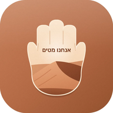

Hebrew verb conjugation practice
Each binyan includes all its verbs, regular and weak-root. You get a random mix.
Tip: the Meaning drill asks you to type the English. Turn off “Show English meaning” below so you only see a verb's meaning when you're tested on it.
| Verb | Tense | Pronoun | You wrote | Correct |
|---|
Spellings use modern unvocalized Hebrew (ktiv male), as you'd see it in Israel; common alternate spellings are accepted too. In the future and imperative, everyday Hebrew uses the masculine plural form for the feminine plural; the formal -nah forms are shown greyed out and are only drilled if you turn on "Formal feminine plural".